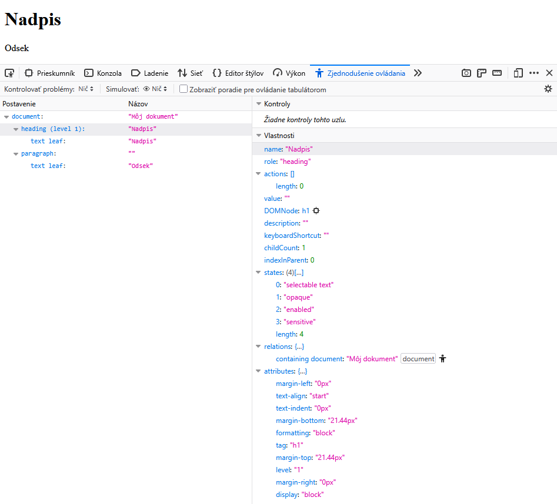

Keď používateľ pracuje s webovou stránkou pomocou čítača obrazovky, môže vzniknúť dojem, že asistenčná technológia jednoducho prečíta HTML dokument, v skutočnosti je cesta informácie od zdrojového kódu až po jej výslednú prezentáciu používateľovi prostredníctvom asistenčnej technológie podstatne zložitejšia.
Čítač obrazovky spravidla nepracuje priamo so zdrojovým HTML kódom stránky. Medzi HTML dokumentom a výslednou informáciou, ktorú používateľ dostane, sa nachádza niekoľko vrstiev. Prehliadač spracuje HTML a vytvorí Document Object Model, teda DOM. Na základe DOM, natívnej sémantiky HTML, ARIA, CSS a ďalších informácií vytvára reprezentáciu určenú pre prístupnosť. Tú následne mapuje na mechanizmy prístupnosti konkrétnej platformy, prostredníctvom ktorých sa k informáciám dostáva asistenčná technológia.
Asistenčná technológia napokon získané informácie interpretuje a prezentuje používateľovi, napríklad prostredníctvom hlasového alebo braillového výstupu.
Pochopenie tejto cesty má praktický význam aj pri vývoji a testovaní prístupnosti. Pomáha vysvetliť, prečo môže byť element prítomný v DOM, ale nemusí byť exponovaný asistenčným technológiám, prečo môže výsledná reprezentácia prístupnosti obsahovať iné informácie než samotný HTML kód alebo prečo sa rovnaká implementácia môže v rôznych kombináciách prehliadača, operačného systému a čítača obrazovky správať odlišne.
Cieľom článku je opísať cestu informácie od HTML kódu cez DOM, reprezentáciu prístupnosti a platformové accessibility API až k čítaču obrazovky a jeho výstupu používateľovi. Nejde pritom o detailný opis implementácie konkrétneho prehliadača alebo čítača obrazovky, ale o vysvetlenie jednotlivých vrstiev a ich úlohy v celom procese. Na konkrétnych príkladoch si zároveň ukážeme, ako môžu HTML, ARIA a ďalšie atribúty ovplyvniť informácie, ktoré sú napokon dostupné asistenčným technológiám.
1. Z HTML sa stáva DOM
Prvým dôležitým krokom je spracovanie HTML dokumentu prehliadačom. Prehliadač HTML nevníma iba ako textový súbor. Pri jeho spracovaní vytvára Document Object Model, skrátene DOM. Tento model definuje DOM Standard.
DOM je programová reprezentácia dokumentu usporiadaná do stromovej štruktúry. Jednotlivé HTML elementy sa v nej stávajú uzlami, medzi ktorými existujú hierarchické vzťahy. Súčasťou tejto reprezentácie sú aj textové uzly a informácie spojené s jednotlivými elementmi.
Predstavme si jednoduchý dokument:
<!DOCTYPE html>
<html lang="sk">
<head>
<title>Môj dokument</title>
</head>
<body>
<h1>Nadpis</h1>
<p>Odsek</p>
</body>
</html>Prehliadač z neho vytvorí stromovú štruktúru. Objekt Document obsahuje koreňový element html. Element html má v tomto príklade dvoch priamych potomkov, head a body. Element head obsahuje title, ktorého textovým obsahom je „Môj dokument“. Element body obsahuje element h1 s textom „Nadpis“ a element p s textom „Odsek“.
DOM teda nezachytáva iba samotné elementy. Zachytáva aj ich hierarchické vzťahy. Každý uzol môže mať rodiča, potomkov a súrodencov na rovnakej úrovni stromu. Text nachádzajúci sa vo vnútri elementov je reprezentovaný textovými uzlami.
DOM je zároveň živá reprezentácia dokumentu. JavaScript môže jeho obsah meniť, pridávať nové elementy, odstraňovať existujúce elementy alebo meniť ich atribúty. Aktuálna podoba DOM preto nemusí byť totožná s pôvodným HTML, ktoré server odoslal prehliadaču.
Je však dôležité rozlišovať medzi DOM a reprezentáciou určenou pre prístupnosť. DOM nie je accessibility tree.
DOM obsahuje množstvo informácií potrebných na fungovanie stránky, ktoré nemusia byť relevantné pre asistenčné technológie. Naopak, niektoré informácie dôležité pre prístupnosť vznikajú až pri ďalšom spracovaní dokumentu.
2. Z DOM vzniká reprezentácia pre prístupnosť
Na základe DOM, natívnej sémantiky HTML, vlastností ARIA, CSS a ďalších informácií vzniká interná reprezentácia obsahu relevantná pre prístupnosť. V bežnej terminológii sa označuje ako accessibility tree.
Accessibility tree však nie je jednoduchou kópiou DOM. Accessibility tree možno zjednodušene chápať ako strom objektov relevantných z pohľadu prístupnosti. Jednotlivé objekty môžu niesť informácie napríklad o svojej role, názve, hodnote, stave, úrovni alebo vzťahoch k iným objektom.
Natívna sémantika HTML poskytuje veľkú časť týchto informácií automaticky. Element <button> poskytuje sémantiku tlačidla. Element <h1> reprezentuje nadpis prvej úrovne. Zaškrtávacie pole vytvorené pomocou <input type="checkbox"> poskytuje sémantiku zaškrtávacieho poľa a umožňuje exponovať aj informáciu o jeho aktuálnom stave.
CSS pritom môže rozhodnúť aj o tom, či sa element v accessibility tree vôbec objaví. Element s display: none alebo visibility: hidden sa z reprezentácie prístupnosti úplne vylúči, rovnako ako sa neguje jeho vizuálne zobrazenie a klávesnicová dostupnosť. To je zásadný rozdiel oproti aria-hidden="true", ktorému sa venujeme nižšie: aria-hidden skryje element len pred asistenčnými technológiami, no element zostáva vizuálne zobrazený a môže zostať aj naďalej zamerateľný klávesnicou. Práve táto odlišnosť je pri testovaní prístupnosti častým zdrojom nedorozumení.
Spôsob, akým sa HTML elementy a atribúty mapujú na platformové accessibility API, opisuje HTML Accessibility API Mappings. Všeobecnejšie pravidlá mapovania webových technológií na platformové accessibility API opisuje Core Accessibility API Mappings.
document, heading a paragraph podľa Firefox Accessibility Inspector.Koreňový objekt document môže niesť názov „Môj dokument“, ktorý vychádza z názvu dokumentu. V diagrame je pri ňom uvedená aj informácia o jazyku sk, odvodená z lang="sk".
Pod objektom document sa v diagrame nachádzajú objekty reprezentujúce nadpis a odsek.
Objekt heading má úroveň 1 a názov „Nadpis“. Pod ním sa zároveň nachádza textový objekt s textom „Nadpis“.
Pri objekte paragraph je situácia odlišná. Samotný objekt môže mať prázdny prístupný názov, hoci odsek obsahuje text „Odsek“. Na prvý pohľad to môže pôsobiť zvláštne, pretože pri objekte heading sme videli názov „Nadpis“.
Dôvodom je, že textový obsah elementu a prístupný názov objektu nie sú to isté. To, že sa medzi otváracou a zatváracou značkou HTML elementu nachádza text, ešte automaticky neznamená, že sa tento text použije ako prístupný názov príslušného objektu.
O tom, z akých zdrojov môže objekt získať prístupný názov, rozhoduje okrem iného jeho rola a pravidlá výpočtu prístupného názvu. Pri jednotlivých rolách WAI ARIA určuje, či môže názov pochádzať napríklad z autora alebo z obsahu. Samotný výpočet následne opisuje špecifikácia Accessible Name and Description Computation.
Pri nadpise je jeho text zároveň tým, čo nadpis identifikuje. Pre element:
<h1>Nadpis</h1>môže byť preto výsledkom objekt s rolou heading, úrovňou 1 a prístupným názvom „Nadpis“. Text „Nadpis“ sa môže podieľať na výpočte názvu objektu.
Pri odseku:
<p>Odsek</p>má text „Odsek“ inú úlohu. Je to predovšetkým textový obsah odseku, nie jeho označenie. Samotný objekt paragraph preto nemusí mať prístupný názov „Odsek“. Jeho text však zostáva v reprezentácii prístupnosti dostupný ako textový obsah.
Zjednodušene si môžeme rozdiel predstaviť takto:
<h1>Nadpis</h1>
heading
názov: "Nadpis"
text: "Nadpis"zatiaľ čo:
<p>Odsek</p>
paragraph
názov: ""
text: "Odsek"Prázdny prístupný názov objektu paragraph teda neznamená, že je odsek prázdny alebo že jeho text nie je dostupný asistenčným technológiám. Znamená iba to, že text „Odsek“ v tomto prípade nepredstavuje prístupný názov objektu. Textový obsah môže byť v accessibility tree reprezentovaný prostredníctvom podradeného textového objektu a takto sprístupnený asistenčným technológiám.
Práve na tomto rozdiele je dobre vidieť, prečo accessibility tree nemožno chápať ako DOM, v ktorom sa iba HTML značky premenovali na roly. Pri jeho vytváraní sa uplatňuje sémantika jednotlivých elementov a rolí a z nej vyplýva, aké vlastnosti budú mať výsledné objekty a ako bude reprezentovaný ich textový obsah.
Diagram zároveň nepredstavuje jedinú možnú alebo normatívne predpísanú podobu accessibility tree. Ide o zjednodušenú ilustráciu princípu. Konkrétna štruktúra stromu a spôsob reprezentácie jednotlivých objektov sa môžu líšiť v závislosti od prehliadača, platformy a použitého accessibility API.
2.1 Nie všetko z DOM musí byť exponované v accessibility tree
DOM a accessibility tree sa môžu líšiť nielen svojou štruktúrou, ale aj tým, ktoré časti dokumentu obsahujú. V DOM sa môžu nachádzať elementy potrebné na vizuálne zobrazenie, rozloženie stránky alebo fungovanie používateľského rozhrania, ktoré z pohľadu prístupnosti nemajú používateľovi sprostredkovať samostatnú informáciu. Takéto elementy preto nemusia byť exponované asistenčným technológiám.
Jedným z mechanizmov, ktorým možno obsah z reprezentácie prístupnosti vylúčiť, je atribút aria-hidden="true". Jeho použitím autor určuje, že daný element a jeho potomkovia nemajú byť exponovaní prostredníctvom accessibility API. Element pritom zostáva súčasťou DOM a môže byť naďalej vizuálne zobrazený na stránke. Podrobnosti o vlastnosti aria-hidden definuje WAI ARIA.
Pri použití aria-hidden="true" je potrebné zohľadniť aj jeho vplyv na potomkov elementu. Ak by sa v takto skrytej časti nachádzal napríklad odkaz, tlačidlo alebo iný zamerateľný prvok, mohol by zostať dostupný pomocou klávesnice, hoci by nebol zodpovedajúcim spôsobom exponovaný asistenčným technológiám. aria-hidden="true" sa preto nemá používať na zamerateľných prvkoch ani na ich predkoch.
Pri testovaní prístupnosti preto samotná kontrola DOM nestačí. Je potrebné overovať aj výslednú reprezentáciu prístupnosti a informácie, ktoré prehliadač prostredníctvom platformového accessibility API sprístupňuje asistenčným technológiám.
3. Prístupný názov nie je vždy text, ktorý vidíme v HTML
Prístupný názov je textová hodnota, pomocou ktorej môže byť objekt používateľského rozhrania identifikovaný asistenčnými technológiami. Nemusí však pochádzať z jedného konkrétneho HTML atribútu alebo priamo z textového obsahu elementu.
Prehliadač ho vypočítava podľa pravidiel definovaných v špecifikácii Accessible Name and Description Computation. Do výpočtu môžu v závislosti od konkrétneho elementu a jeho role vstupovať rôzne zdroje.
Pri formulárovom poli môže názov pochádzať napríklad z asociovaného elementu <label>:
<label for="email">Email</label>
<input
id="email"
type="email"
autocomplete="email">V tomto prípade element <label> poskytuje poľu prístupný názov „Email“.
Pri tlačidle môže názov pochádzať priamo z jeho textového obsahu:
<button>Odoslať</button>Prístupný názov tlačidla je v tomto prípade „Odoslať“. Do jeho výpočtu však môžu vstupovať aj iné zdroje, napríklad aria-labelledby alebo aria-label, pričom pravidlá výpočtu určujú aj ich vzájomnú prioritu.
Dobre to možno ukázať na tlačidle, ktorého viditeľný text sa líši od hodnoty aria-label:
<button aria-label="Vyhľadať">
Hľadať
</button>Tlačidlo obsahuje viditeľný text „Hľadať“, ktorý by bez ďalšieho zdroja poskytol jeho prístupný názov. V tomto prípade je však použitý atribút aria-label, ktorý má pri výpočte prístupného názvu pred textovým obsahom tlačidla prednosť. Výsledok si preto môžeme zjednodušene predstaviť takto:
button
názov: "Vyhľadať"Asistenčnej technológii je teda exponovaný výsledný prístupný názov „Vyhľadať“. Čítač obrazovky nemusí sám analyzovať aria-label a rozhodovať, či ho uprednostní pred textom „Hľadať“. Toto rozhodnutie vyplýva už z pravidiel výpočtu prístupného názvu a čítač obrazovky následne pracuje s výslednou vlastnosťou objektu. Používateľovi tak môže oznámiť napríklad „Vyhľadať, tlačidlo“.
Tento príklad slúži výlučne na ilustráciu mechanizmu výpočtu prístupného názvu, nie ako odporúčaný spôsob zápisu. Nesúlad medzi viditeľným textom tlačidla a jeho prístupným názvom porušuje kritérium WCAG 2.5.3 Label in Name, keďže používateľ hlasového ovládania, ktorý sa spolieha na viditeľný text „Hľadať“, by príslušný príkaz nemusel nájsť. V praxi by preto mal prístupný názov obsahovať viditeľný text prvku, prípadne ho dopĺňať, nie mu úplne odporovať.
Tento príklad zároveň ukazuje, prečo nemožno fungovanie čítača obrazovky zjednodušiť na „čítanie HTML“. Informácia, ktorú asistenčná technológia dostane, môže byť výsledkom spracovania viacerých zdrojov a nemusí byť totožná s textom zobrazeným na obrazovke.
Výslednú reprezentáciu možno skúmať aj vo vývojárskych nástrojoch prehliadača.

Takýto pohľad umožňuje pri diagnostike overiť nielen samotné HTML, ale aj výslednú rolu, prístupný názov, popis, stavy a ďalšie vlastnosti, ktoré prehliadač pre objekt vypočítal a exponuje.
3.1 Prístupný názov a prístupný popis nie sú totožné
Popri prístupnom názve môže objekt obsahovať aj accessible description, teda prístupný popis. Ide o dve samostatné vlastnosti objektu v reprezentácii prístupnosti a každá z nich má inú úlohu.
Prístupný popis poskytuje doplňujúcu informáciu o už identifikovanom prvku. Môže napríklad vysvetliť požadovaný formát vstupu, podmienky jeho vyplnenia alebo inú informáciu, ktorú používateľ potrebuje pri práci s prvkom. Nenahrádza preto prístupný názov, ale dopĺňa ho.
Predstavme si formulárové pole:
<label for="password">Heslo</label>
<input
id="password"
type="password"
autocomplete="current-password"
aria-describedby="password-help">
<p id="password-help">
Heslo musí obsahovať aspoň 12 znakov.
</p>V tomto prípade sa text „Heslo“ z asociovaného elementu <label> použije pri výpočte prístupného názvu poľa.
Atribút aria-describedby="password-help" vytvára vzťah medzi vstupným poľom a elementom s id="password-help". Text „Heslo musí obsahovať aspoň 12 znakov.“ sa preto použije pri výpočte prístupného popisu poľa.
Výsledný objekt reprezentujúci formulárové pole si tak môžeme zjednodušene predstaviť napríklad takto:
textbox
názov: "Heslo"
popis: "Heslo musí obsahovať aspoň 12 znakov."Text „Heslo musí obsahovať aspoň 12 znakov.“ sa teda nestáva súčasťou prístupného názvu iba preto, že ho čítač obrazovky môže oznámiť spolu s názvom poľa. Prístupný názov a prístupný popis zostávajú z pohľadu reprezentácie prístupnosti samostatnými vlastnosťami objektu.
To je dôležité aj pri testovaní prístupnosti. Ak čítač obrazovky pri zameraní poľa oznámi napríklad „Heslo, editačné pole, Heslo musí obsahovať aspoň 12 znakov“, zo samotného hlasového výstupu nemusí byť zrejmé, z ktorej vlastnosti jednotlivé informácie pochádzajú. Pri diagnostike je preto užitočné overiť priamo výsledný prístupný názov a prístupný popis objektu.
Spôsob výpočtu oboch vlastností definuje Accessible Name and Description Computation.
Rola, prístupný názov a popis pritom predstavujú iba časť informácií, ktoré môže objekt niesť. V závislosti od konkrétneho prvku môže reprezentácia prístupnosti obsahovať aj jeho hodnotu, stav, úroveň, jazyk alebo vzťahy k ďalším objektom.
4. Accessibility API prepája prehliadač s operačným systémom
Accessibility tree obsahuje informácie o webovom obsahu v podobe relevantnej pre prístupnosť. Čítač obrazovky však nepotrebuje poznať DOM ani spôsob, akým si konkrétny prehliadač túto reprezentáciu interne vytvára a uchováva. Potrebuje mať k dispozícii informácie o jednotlivých objektoch, napríklad ich rolu, prístupný názov, stav alebo vzťahy k ďalším objektom.
Na sprostredkovanie týchto informácií slúžia platformové accessibility API.
API je skratka z anglického „Application Programming Interface“. Ide o rozhranie, ktoré umožňuje komunikáciu medzi rôznymi časťami softvéru. V prípade accessibility API poskytuje platforma mechanizmus, prostredníctvom ktorého môžu aplikácie sprístupňovať informácie o svojom používateľskom rozhraní asistenčným technológiám.
Predstavme si napríklad tlačidlo, ktoré ovláda zobrazenie menu:
<button aria-expanded="false" aria-controls="menu">
Menu
</button>Na základe natívnej sémantiky elementu button, jeho textového obsahu a atribútov ARIA môže prehliadač vytvoriť objekt, ktorý si zjednodušene predstavíme takto:
button
názov: "Menu"
expanded: false
controls: menuJednotlivé informácie pochádzajú z rôznych častí HTML. Element button poskytuje natívnu rolu tlačidla, text „Menu“ sa použije pri výpočte jeho prístupného názvu a aria-expanded="false" vyjadruje, že ovládaný obsah je momentálne zatvorený. Atribút aria-controls="menu" zároveň vytvára vzťah k elementu s id="menu" a vyjadruje, že tlačidlo tento obsah ovláda.
Aby mohli s týmito informáciami pracovať asistenčné technológie, prehliadač ich mapuje na zodpovedajúce objekty, vlastnosti, stavy a vzťahy accessibility API konkrétnej platformy. Rola tlačidla, jeho názov, stav otvorenia aj vzťah k ovládanému objektu tak musia byť reprezentované spôsobom, ktorý daná platforma podporuje.
Toto mapovanie je potrebné preto, že webové technológie a operačné systémy nepoužívajú jeden spoločný model prístupnosti. HTML a ARIA definujú sémantiku webového obsahu, zatiaľ čo jednotlivé platformy majú vlastné rozhrania a vlastné spôsoby reprezentácie prístupných objektov a ich vlastností.
Neexistuje preto jedno accessibility API spoločné pre všetky platformy. V prostredí Windows sa používa napríklad Microsoft UI Automation, platformy spoločnosti Apple poskytujú vlastné Accessibility API, linuxové desktopové prostredia využívajú napríklad AT-SPI a Android poskytuje vlastný Accessibility framework.
Na Windows navyše nejde iba o jedno API. Popri UI Automation sa pri sprístupňovaní webového obsahu dlhodobo používa aj staršie IAccessible2, na ktoré sa pri práci s webovým obsahom vo veľkej miere spoliehajú napríklad NVDA a JAWS. Chromium preto na Windows súbežne podporuje oba mechanizmy a konkrétny čítač obrazovky si volí, s ktorým z nich bude pracovať.
Prehliadač musí preto rovnakú sémantiku webového obsahu sprístupniť spôsobom zodpovedajúcim platforme, na ktorej je spustený. Mapovanie sa pritom netýka iba rolí objektov, ale aj ich prístupných názvov a popisov, hodnôt, stavov, vzťahov a ďalších informácií relevantných pre prístupnosť.
Pravidlá, podľa ktorých sa sémantika webových technológií premieta do platformových accessibility API, opisujú špecifikácie Accessibility API Mappings. Core Accessibility API Mappings definuje všeobecné pravidlá mapovania rolí, stavov a vlastností, zatiaľ čo HTML Accessibility API Mappings opisuje mapovanie natívnej sémantiky HTML.
Accessibility tree a platformové accessibility API teda plnia odlišné úlohy. Accessibility tree predstavuje reprezentáciu webového obsahu z pohľadu prístupnosti, zatiaľ čo accessibility API poskytuje rozhranie, prostredníctvom ktorého môže byť táto sémantika sprístupnená asistenčným technológiám na konkrétnej platforme.
5. V modernom prehliadači nemusí celý proces prebiehať v jednom procese
Moderné prehliadače sú viacprocesové aplikácie. Webový obsah, používateľské rozhranie prehliadača a ďalšie časti jeho funkcionality nemusia byť spracovávané v jednom spoločnom procese.
Takéto rozdelenie súvisí najmä s bezpečnosťou, stabilitou a izoláciou jednotlivých častí prehliadača. Zlyhanie alebo problém v jednej webovej stránke tak nemusí nevyhnutne ovplyvniť celý prehliadač.
Viacprocesová architektúra má dôsledky aj pre prístupnosť.
Informácie potrebné na vytvorenie reprezentácie prístupnosti vznikajú pri spracovaní webového dokumentu. Asistenčná technológia však pracuje s informáciami sprístupnenými prostredníctvom mechanizmov operačného systému. Prehliadač preto môže potrebovať informácie o prístupnosti prenášať medzi svojimi internými procesmi a udržiavať ich medzi nimi synchronizované.
Dobrým príkladom je Chromium, ktorého architektúru prístupnosti podrobnejšie opisuje dokument Chromium Accessibility Overview.
Jedna časť prehliadača môže spracúvať samotný webový dokument a vytvárať informácie relevantné pre prístupnosť, zatiaľ čo iná časť ich môže sprístupňovať prostredníctvom accessibility API operačného systému.
Neznamená to teda, že sa celý DOM pri každej zmene jednoducho prenesie asistenčnej technológii. Prehliadač udržiava potrebné reprezentácie a aktualizuje tie informácie, ktoré sú z pohľadu prístupnosti relevantné.
Ak sa napríklad pomocou JavaScriptu zmení stav prvku:
<button aria-expanded="false" aria-controls="menu">
Menu
</button>na:
<button aria-expanded="true" aria-controls="menu">
Menu
</button>zmena vznikne vo webovom dokumente. Prehliadač ju musí premietnuť do svojej reprezentácie prístupnosti a zabezpečiť, aby bol nový stav objektu sprístupnený aj prostredníctvom príslušného accessibility API.
Podobne môže byť potrebné spracovať zmenu prístupného názvu objektu, hodnoty formulárového prvku, stavu začiarknutia, klávesnicového fokusu alebo dynamicky vloženého obsahu.
Na komunikáciu medzi jednotlivými procesmi používajú prehliadače interné mechanizmy medziprocesovej komunikácie. Chromium na tento účel používa okrem iného infraštruktúru Mojo.
Pre autora webového obsahu nie je potrebné poznať detaily tejto architektúry. Je však dôležité vedieť, že medzi zmenou HTML alebo DOM a informáciou dostupnou asistenčnej technológii môže existovať viacero ďalších technických krokov.
Informácia tak môže počas svojej cesty prejsť spracovaním v DOM, vytvorením alebo aktualizáciou reprezentácie prístupnosti, synchronizáciou medzi časťami prehliadača a mapovaním na platformové accessibility API.
6. Čítač obrazovky získané informácie ďalej interpretuje
Čítač obrazovky spravidla nezačína pri HTML zdrojovom kóde stránky. Pracuje s informáciami, ktoré mu sprístupňuje platforma na základe reprezentácie vytvorenej prehliadačom.
Ak je napríklad používateľ zameraný na tlačidle:
<button>Odoslať</button>čítač obrazovky môže prostredníctvom mechanizmov prístupnosti dostať informácie, ktoré si zjednodušene predstavíme takto:
rola: button
názov: "Odoslať"
focused: trueTieto údaje ešte neurčujú presnú vetu, ktorú používateľ napokon počuje.
Čítač obrazovky ich musí interpretovať a rozhodnúť, ako ich používateľovi prezentuje. Môže oznámiť názov prvku, jeho rolu a podľa potreby aj stav alebo ďalšie vlastnosti.
Výstup môže mať napríklad význam:
Odoslať, tlačidloKonkrétne znenie však nie je vlastnosťou HTML ani accessibility tree. Závisí od čítača obrazovky, jeho lokalizácie, používateľských nastavení, režimu práce a ďalších okolností.
Toto rozlíšenie je dôležité. Accessibility tree neobsahuje hotovú vetu, ktorú má čítač obrazovky prečítať. Obsahuje štruktúrované informácie o objektoch. Čítač obrazovky z týchto informácií vytvára používateľský výstup.
Pri rozbaľovacom tlačidle môže mať napríklad k dispozícii:
rola: button
názov: "Menu"
expanded: falseZ týchto vlastností môže vytvoriť výstup, ktorého význam bude napríklad:
Menu, tlačidlo, zatvorenéAk sa hodnota expanded zmení na true, čítač obrazovky môže používateľovi oznámiť nový stav ako „otvorené“. Spôsob a okamih oznámenia však závisia od konkrétnej asistenčnej technológie.
Čítač obrazovky navyše nerieši iba prezentáciu aktuálne zameraného prvku. Nad informáciami sprístupnenými prehliadačom si vytvára vlastné mechanizmy práce s webovým obsahom.
Používateľovi môže napríklad umožniť:
- prechádzať medzi nadpismi,
- prechádzať medzi odkazmi,
- vyhľadať formulárové prvky,
- navigovať medzi tabuľkami,
- zobraziť zoznam určitých typov prvkov,
- čítať text po znakoch, slovách alebo riadkoch,
- pracovať s obsahom bez toho, aby sa na každý prvok presúval klávesnicový fokus.
Preto treba rozlišovať aj medzi klávesnicovým fokusom stránky a pozíciou, na ktorej sa používateľ nachádza pri čítaní obsahu pomocou čítača obrazovky.
Používateľ môže napríklad prechádzať medzi nadpismi alebo odsekmi, hoci tieto prvky samy osebe nemusia byť zamerateľné klávesnicou.
S týmto rozlíšením súvisí aj oznamovanie zmien obsahu, ktoré nie sú spojené s presunom fokusu, napríklad prostredníctvom aria-live. Región označený ako aria-live môže čítač obrazovky oznámiť používateľovi aj vtedy, keď sa jeho fokus ani pozícia pri čítaní nenachádzajú v danej časti stránky. Aj tu platí, že spôsob a mieru takéhoto oznámenia určuje konkrétna asistenčná technológia a jej nastavenia.
Čítač obrazovky môže zároveň umožňovať nastaviť množstvo oznamovaných informácií. Používateľ si môže zvoliť podrobnejšie alebo stručnejšie oznamovanie rolí, stavov a ďalších vlastností.
Rovnaký objekt preto nemusí byť rôznym používateľom prezentovaný úplne rovnakým spôsobom, hoci základné informácie sprístupnené prehliadačom zostávajú rovnaké.
Pri testovaní prístupnosti preto nie je vhodné zamieňať výstup konkrétneho čítača obrazovky za samotnú reprezentáciu prístupnosti. Ak čítač obrazovky určitú informáciu oznámi alebo neoznámi, je užitočné rozlišovať, či:
- informácia vznikla správne už v HTML a DOM,
- bola správne premietnutá do reprezentácie prístupnosti,
- bola správne sprístupnená prostredníctvom accessibility API,
- a až následne, ako s ňou pracuje konkrétna asistenčná technológia.
Takéto rozlíšenie pomáha pri diagnostike určiť, v ktorej vrstve celého reťazca problém skutočne vzniká.
Každú z týchto vrstiev možno pri diagnostike overiť aj samostatne:
- DOM – vývojárske nástroje prehliadača, panel Elements.
- Reprezentácia prístupnosti – panel Accessibility vo vývojárskych nástrojoch prehliadača alebo nástroje ako Accessibility Insights for Web.
- Platformové accessibility API – napríklad Accessibility Insights for Windows alebo Inspect.exe na Windows, Accessibility Inspector na macOS.
- Výstup asistenčnej technológie – napríklad Speech Viewer alebo log v NVDA, ktorý zobrazuje, čo bolo používateľovi skutočne oznámené.
Ak sa výsledok medzi dvomi susednými vrstvami líši od očakávania, problém sa s vysokou pravdepodobnosťou nachádza práve na rozhraní medzi nimi.
7. Výsledkom nemusí byť iba syntetizovaná reč
Pojem „čítač obrazovky“ môže vytvárať predstavu, že výsledkom jeho práce je vždy hlas. Syntetizovaná reč je síce veľmi častým spôsobom prezentácie informácií, ale nie je jediným možným výstupom.
Čítač obrazovky pracuje so štruktúrovanými informáciami o objektoch a následne ich môže používateľovi sprostredkovať rôznymi spôsobmi. Najčastejšie ide o hlasový výstup, braillový výstup alebo ich kombináciu.
Hlasový výstup
Pri hlasovom výstupe čítač obrazovky pripraví informáciu, ktorá má byť používateľovi oznámená, a odovzdá ju syntetizátoru reči.
Ak má napríklad k dispozícii objekt:
heading
level: 1
názov: "Nadpis"môže používateľovi sprostredkovať informáciu, ktorej význam zodpovedá napríklad:
Nadpis, nadpis prvej úrovneSyntetizátor reči následne túto informáciu prevedie do zvukovej podoby.
Výsledná výslovnosť môže byť ovplyvnená viacerými informáciami. Jednou z nich je jazyk obsahu.
Ak je dokument správne označený napríklad:
<html lang="sk">informácia o jazyku môže byť súčasťou reprezentácie prístupnosti a asistenčná technológia ju môže využiť pri výbere zodpovedajúcej výslovnosti alebo hlasu.
Atribút, ktorý sa pôvodne nachádza v HTML dokumente, tak môže mať dôsledok až na výsledný hlasový výstup.
Braillový výstup
Informácie nemusia byť používateľovi prezentované iba zvukom. Čítač obrazovky môže spolupracovať aj s obnoviteľným braillovým riadkom.
Braillový riadok je hardvérové zariadenie tvorené sústavou braillových buniek s mechanicky ovládanými bodmi. Jednotlivé body sa podľa zobrazovaných znakov zdvíhajú a klesajú, vďaka čomu môže používateľ informácie čítať hmatom.
Je dôležité rozlišovať medzi zariadením a spôsobom prezentácie. Braillový riadok je zariadenie, zatiaľ čo braillový výstup je spôsob, akým sú na tomto zariadení informácie používateľovi prezentované.
Ak sa na stránke nachádza napríklad:
<p>Odsek</p>text „Odsek“ môže byť prostredníctvom reprezentácie prístupnosti a čítača obrazovky sprostredkovaný používateľovi hlasovým výstupom, braillovým výstupom alebo oboma spôsobmi súčasne.
Braillový výstup pritom nemusí byť iba doslovným prepisom hlasového výstupu. Čítač obrazovky môže pre braillový riadok vytvárať samostatnú reprezentáciu informácií a používať skratky alebo špecifické označenia rolí a stavov.
Konkrétna podoba braillového výstupu preto môže závisieť od čítača obrazovky, jeho nastavení, použitej braillovskej tabuľky, vlastností pripojeného zariadenia a ďalších okolností.
Informácia a jej prezentácia nie sú to isté
Na konci celého procesu je potrebné rozlišovať medzi informáciou sprístupnenou asistenčnej technológii a spôsobom, akým ju asistenčná technológia prezentuje používateľovi.
Prehliadač a platformové accessibility API môžu sprístupniť napríklad:
rola: heading
úroveň: 1
názov: "Nadpis"
jazyk: skČítač obrazovky môže tieto údaje použiť na vytvorenie hlasového výstupu, braillového výstupu alebo oboch súčasne. Nemusí pritom všetky dostupné vlastnosti prezentovať rovnakým spôsobom ani v rovnakom poradí.
HTML teda nie je hlasový ani braillový výstup. Accessibility tree tiež nie je hotový výstup pre používateľa. Ide o štruktúrované informácie, ktoré počas celej cesty prechádzajú spracovaním a mapovaním a až asistenčná technológia z nich vytvára výslednú prezentáciu pre používateľa.
8. Kvalita celého reťazca sa začína v kóde
Skutočnosť, že medzi HTML a čítačom obrazovky existuje niekoľko technologických vrstiev, neznamená, že autor webového obsahu musí poznať implementačné detaily každého prehliadača, operačného systému a čítača obrazovky.
Najspoľahlivejším východiskom je používanie štandardných webových technológií spôsobom, na ktorý boli navrhnuté, a dodržiavanie pravidiel a požiadaviek príslušných špecifikácií tak, aby bol výsledný kód validný.
Rôzne spôsoby implementácie rovnakého používateľského rozhrania totiž nemusia mať rovnakú úroveň podpory vo všetkých kombináciách prehliadačov a asistenčných technológií.
Tlačidlo možno napríklad vytvoriť ako natívny HTML element:
<button>Uložiť</button>Na prvý pohľad podobný komponent možno vytvoriť aj takto:
<div role="button" tabindex="0">
Uložiť
</div>Tieto implementácie však nie sú rovnocenné.
Natívny element button má svoju sémantiku, zamerateľnosť a základné interakčné správanie definované samotným HTML. Pri všeobecnom elemente div musí autor potrebné vlastnosti a správanie zabezpečiť sám.
ARIA môže doplniť alebo upraviť informácie o sémantike prvku, ale sama osebe nevytvára všetko správanie natívneho HTML ovládacieho prvku.
Pri používaní ARIA je preto vhodné vychádzať z princípov opísaných v dokumente Using ARIA a v ARIA Authoring Practices Guide.
8.1 Uprednostnenie natívnych HTML prvkov (1. pravidlo ARIA)
Prvé pravidlo používania ARIA je zároveň najdôležitejšie. Ak HTML poskytuje element alebo atribút, ktorý už obsahuje požadovanú sémantiku a správanie, má dostať prednosť pred vytváraním vlastnej alternatívy pomocou ARIA.
Namiesto:
<div role="button" tabindex="0">
Uložiť
</div>je preto vhodnejšie použiť:
<button>Uložiť</button>Rozdiel nie je iba v množstve kódu. Natívne tlačidlo už poskytuje sémantiku a základné správanie, ktoré by pri vlastnom komponente musel zabezpečiť autor.
role="button" môže ovplyvniť spôsob, akým je objekt exponovaný asistenčným technológiám, ale automaticky z elementu div nevytvorí natívne HTML tlačidlo.
8.2 Zachovanie natívnej sémantiky HTML prvkov (2. pravidlo ARIA)
HTML elementy už majú vlastnú sémantiku. Ak ju prepíšeme pomocou ARIA role, výsledná reprezentácia objektu sa môže začať odchyľovať od jeho pôvodného významu.
Problematický môže byť napríklad zápis:
<h2 role="tab">
Nastavenia
</h2>Element h2 má natívnu sémantiku nadpisu, zatiaľ čo role="tab" mu priraďuje inú rolu.
Dokument Using ARIA preto upozorňuje, že natívna sémantika HTML by sa nemala meniť bez skutočnej potreby.
8.3 Zabezpečenie ovládateľnosti interaktívnych ARIA komponentov klávesnicou (3. pravidlo ARIA)
Ak autor vytvorí vlastný interaktívny komponent pomocou ARIA, nestačí zabezpečiť iba jeho správnu reprezentáciu pre asistenčné technológie. Musí implementovať aj zodpovedajúce interakčné správanie.
Napríklad:
<div role="button" tabindex="0">
Uložiť
</div>môže byť zamerateľný a exponovaný s rolou tlačidla. To však samo osebe nezabezpečuje, že sa bude správať ako natívne tlačidlo.
Pri vlastnom prvku s role="button" musí autor zabezpečiť aj očakávanú klávesnicovú interakciu. ARIA Authoring Practices Guide pre Button Pattern opisuje aktiváciu tlačidla pomocou klávesov Enter a Space.
Natívny button toto základné správanie poskytuje automaticky. Pri vlastnom komponente za jeho implementáciu zodpovedá autor.
8.4 Exponovanie zamerateľných prvkov asistenčným technológiám (4. pravidlo ARIA)
Ďalšie pravidlo upozorňuje na konflikt medzi zamerateľnosťou prvku a jeho odstránením z reprezentácie prístupnosti.
Problematický je napríklad zápis:
<button aria-hidden="true">
Pokračovať
</button>Rovnaký problém môže vzniknúť aj nepriamo:
<div aria-hidden="true">
<button>Pokračovať</button>
</div>V druhom prípade sa aria-hidden="true" vzťahuje aj na potomkov rodičovského elementu. Interaktívny prvok sa tak môže dostať do situácie, v ktorej je súčasťou klávesnicovej interakcie, ale nie je zodpovedajúcim spôsobom exponovaný asistenčným technológiám.
aria-hidden="true" sa preto nemá používať na zamerateľných elementoch ani spôsobom, ktorým sa z reprezentácie prístupnosti odstránia ich zamerateľní potomkovia.
8.5 Zabezpečenie prístupného názvu interaktívnych prvkov (5. pravidlo ARIA)
Interaktívny prvok potrebuje nielen správnu rolu a správanie, ale aj názov, prostredníctvom ktorého môže používateľ pochopiť jeho účel.
Napríklad ikonové tlačidlo bez textového obsahu:
<button>
<svg aria-hidden="true">
...
</svg>
</button>môže mať správnu natívnu rolu tlačidla a môže byť ovládateľné klávesnicou, no bez ďalšej informácie nemusí mať použiteľný prístupný názov.
Jedným z možných riešení je:
<button aria-label="Zavrieť">
<svg aria-hidden="true">
...
</svg>
</button>V tomto prípade aria-label poskytuje tlačidlu prístupný názov „Zavrieť“, zatiaľ čo samotná ikona je skrytá pred asistenčnými technológiami.
Aj tu však platí základná zásada, že ARIA má byť použitá tam, kde je potrebná. Ak tlačidlo už obsahuje vhodný text, jeho prístupný názov možno odvodiť z natívneho obsahu bez pridávania aria-label.
8.6 Uprednostnenie natívnej sémantiky a správania pred vlastnou implementáciou
Čím viac sémantiky a správania poskytuje natívne HTML, tým menej zodpovednosti zostáva na autorovi komponentu. Pri vlastnom ARIA komponente musí autor sám zabezpečiť, aby sa zhodovala jeho vizuálna podoba, deklarovaná rola, aktuálny stav, klávesnicové správanie aj informácie napokon exponované prostredníctvom accessibility API — a ani technicky správna implementácia pritom nezaručuje identické správanie vo všetkých kombináciách prehliadača, operačného systému a asistenčnej technológie.
Najskôr využiť sémantiku a správanie, ktoré poskytuje samotné HTML, a ARIA pridávať až tam, kde je skutočne potrebná.
Cesta od HTML k hlasu sa preto nezačína v čítači obrazovky. Začína už rozhodnutím autora, aký element použije v zdrojovom kóde.
Kvalitná sémantika vytvára základ, z ktorého môže vzniknúť zmysluplná reprezentácia prístupnosti. Tá môže byť prostredníctvom platformových mechanizmov sprístupnená asistenčnej technológii a napokon prezentovaná používateľovi prostredníctvom hlasového alebo braillového výstupu.